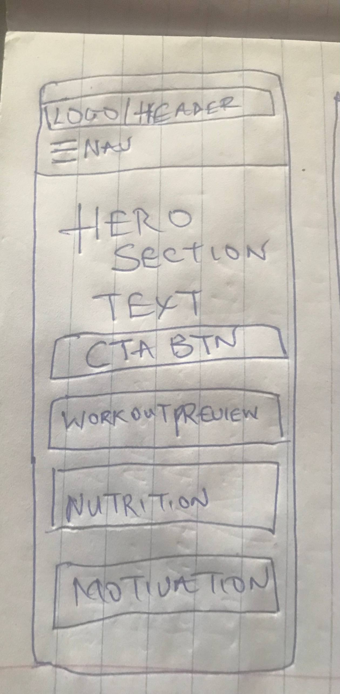
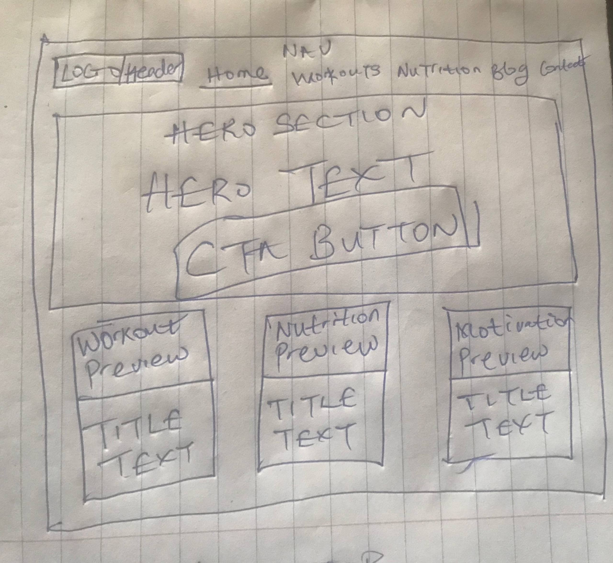

Site Name
FitSpark
This name pairs "Fit" with "Spark" to suggest the small, energetic push someone needs to start a fitness and wellness habit. It's short, easy to say out loud, and works well as a logo wordmark.
Optional domain availability: fitspark.io or getfitspark.com
Site Purpose
FitSpark is an informational starter site for people who are new to fitness and don't know where to begin. It provides beginner-friendly workout routines, basic nutrition guidance, and simple motivational tools to help visitors build sustainable healthy habits without feeling overwhelmed.
Scenarios
Scenarios represent questions a first-time visitor might ask when they land on the site:
- "I've never worked out before — what's a safe routine to start with this week?"
- "What should I actually eat before and after a workout if I'm just starting out?"
- "How do I stay motivated when I don't see results right away?"
Color Scheme
The palette uses two core colors plus a light neutral background, chosen to feel energetic and approachable rather than intense or intimidating — appropriate for someone just starting a fitness journey.
Deep Green — #2e7d32
Used for headings, the header background, and navigation elements. Represents health, growth, and vitality.
Coral Orange — #ff6f3c
Used for buttons, links, and small accents like the site name and section labels. Represents energy and motivation.
Warm Off-White — #f7f5f2
Used as the main page background to keep the page calm and readable, letting the green and coral stand out.
Typography
Two typefaces keep the design simple and readable:
- Poppins (bold, geometric) is used for all headings
(
h1,h2) throughout the site to give it an energetic, modern feel. - Inter is used for all body text and lists because it stays clean and easy to read at small sizes, which matters for longer nutrition and workout descriptions.
Wireframes
Hand-sketched wireframes for the FitSpark home page, mobile and wide viewport:

